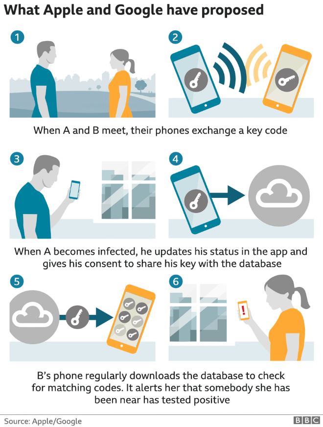

May 5, 2020
COVID-19 related
What will it take to reopen the US economy and society? Harvard University offers a Roadmap to Pandemic resilience. `Our bipartisan group of experts in economics, public health, technology, and ethics from across the country, with support from The Rockefeller Foundation, has released the nation’s first comprehensive operational roadmap for mobilizing and reopening the U.S. economy in the midst of the COVID-19 crisis.’
(cont’d) It comes down to 3 main components: Testing, Tracing, and Supported Isolation. This group of experts says it’s not a choice between on-going economic anguish or accelerating widespread death. The way out is through massively increased Testing, Tracing, and Supported Isolation.
(cont’d) It would take 5 million tests a day by June, 20 million a day by July. It would take a national production board, and/or an interstate compact, to distribute the tests. It would mean enlisting at least 100,000 Americans to help with contact tracing. And it would require leadership to orchestrate all this.
(cont’d) This will require investment, but it’s a bargain compared with continued collective quarantine (or risky reopening without adequate testing/tracing/supported isolation). We’ll have to mobilize in a way similar to WWII.
See more supporting materials like in-depth papers on different aspects: PandemicTesting.org.
Here is an overview:
Apple and Google are are moving away from the term 'contact tracing', now using the term `exposure notification.’
Overview of what Apple and Google have proposed:

Apple and Google release first seed of COVID-19 exposure notification API for contact tracing app developers.
A lot of details on How exposure notification is designed to work.
pandemic humor
Yesterday, the Pulitzer prizes were announced. Barry Blitt of the New Yorker won for Editorial Cartooning:
Congratulations to #BarryBlitt and @newyorker. #Pulitzer pic.twitter.com/LcKUqfkG89
— The Pulitzer Prizes (@PulitzerPrizes) May 4, 2020
Here is his latest cartoon:
Apple and iOS news
Tim Cook delivers Ohio State Commencement Address, on Sunday, May 3, 2020. He offered a perspective from history, how the Spanish Flu affected Amelia Earhart, Franklin Delano Roosevelt, and poet T.S. Elliot and how they overcame adversity and thrived. He advised graduates to “build a better future than the one you thought was certain”.
(cont’d) Cook added, "Most of all, think about how you — blessed with a world-class education — might act and work and be different when all of this is said and done. Memorialize in your heart the way in which these times reveal what really matters: the health and well being of our loved ones, the resilience of our communities, and the sacrifices made by those — from doctors to garbage collectors — who give their whole selves to serving others.’’
Read the transcript of his speech, or watch here (8 mins):
Apple announces new Macbook Pro 13'' with magic keyboard, double the storage, and faster performance.
See the new Macbook Pro starting at $1299.
Dan Moren gives an overview of the new Macbook Pro lineup.
With iOS 13.5, will make It Easier to Unlock an iPhone With Passcode When Wearing a Mask.
With iOS 13.5, group FaceTime will enable turning off automatic zooming of the speaker's face.
With iOS 13.5, Apple and Google Reveal How COVID-19 Exposure Notification Apps Will Function.
Apple looks to make editing sent Messages possible at last, based on patent applications, reports AppleInsider.
‘Morning Show’ Extends Apple TV+ Overall Deal, reports Variety. Showrunner Kerry Ehrin has signed a multi-year extension of her Apple overall deal.
The WSJ reports that, according to sources familiar with the matter, Apple is delaying mass production of flagship iPhones for 2020, due to delays from COVID-19 which has disrupted supply chains in Asia. According to this report, the delay is about a month. `The phones, some with 5G connectivity, will vary in price and come in three sizes.’
If this turns out to be true, we might see the new iPhones this year come out in October rather than the usual September release.
iPhone’s FaceID does not work with masks:
OS 13.5 Beta iMakes It Easier to Unlock an iPhone With Passcode When Wearing a Mask.
Ars Technica’s iPhone SE review: Small screen, huge performance.
iOS apps
Quibi is an app and a service. Watch movie-quality shows designed for your phone. They add new episodes every day. It comes with a 14-day free trial. The idea behind Quibi is to offer high quality content that is designed specifically for your iPhone. (Also, see link below for a very interesting podcast interview about Quibi.)
Pixelmator has just had a significant update for iOS. It's a competitor to and improvement from Adobe's Photoshop for most people.
We discussed GoodNotes in our last meeting. GoodNotes features incudes the ability to create your own page templates: such as a page layout that you use frequently for planning projects, or a photo background you like, or a sketch, a checklist, and so on.
Apple's COVID-19 App Gains Updated CDC Symptoms, Cloth Mask Tips, reports Macrumors. Download the COVID-19 app here for free.
Apple has also updated their COVID-19 Screening Tool webpage which has the same info as the app.
podcasts
Listen to a very interesting interview of Jeffrey Katzenberg: It’s not TV (or HBO, or Netflix). It’s Quibi.. Podcast synopsis: `Quibi founder Jeffrey Katzenberg talks with Recode's Kara Swisher about the first week of the short-form video app — which was intended for on-the-go consumers, but still racked up 1.7 million downloads, even though most of the world is currently staying at home. Katzenberg makes the case for short video episodes as a logical next step for entertainment, and explains how the economics of producing shows such as Dishmantled and Chrissy's Court compares to Netflix, traditional TV and YouTube. He also explains why he's not worried about skepticism from TV purists, why he desperately wanted former eBay and HP CEO Meg Whitman to lead Quibi, and how the platform is attracting top talent from across Hollywood and the broader entertainment business to make shows.’
tips & tricks
How to troubleshoot volume issues on your AirPods or airPods Pro. A very good list of steps.
When you use your iPad, if you split the screen between 2 apps, you might find yourself needing to type on one of the two apps, while wanting to see the entire window of the other app. For example, having GoodNotes with handwritten scribbles/ drawings and Notes that you are using to type some ideas. Reminder: you can split and move your iPad screen keyboard and you can float the keyboard.
gadgets & accessories
Roger S. points us to Shane Whatley’s latest video about using NFC tags along with Shortcuts to make his smart lights do different things based on the time of day.
Logitech webpage leaks upcoming ‘Circle View’ smart camera with HomeKit support
Remember Automatic, the gadget for cars? It is shutting down and discontinuing service, it announced. `Just like many other companies in the United States, the COVID-19 pandemic has adversely impacted our business. With fewer consumers purchasing and leasing vehicles and drivers on the road, we unfortunately do not see a path forward for our business. These are unprecedented times, and with so much uncertainty ahead, we have made the difficult decision to discontinue the Automatic connected car product, service and platform. We will be shutting down all operations at 11:59 pm, PT, on May 28, 2020 and, as a result, your service will end on that time.’ recall that in 2017, SiriusXM acquired Automatic for over $100M.
Pay
Apple Pay Could Soon Expand to Mexico based on `reports from iPhone users in Mexico who have been able to add their Banregio cards to the Wallet app’, writes Macrumors.
watch
Apple Watch ECG detects signs of coronary ischemia missed by a 12-channel hospital ECG, reports European Heart Journal. Thanks to her Apple Watch detecting her symptoms, the patient Accordingly, the patient was treated with a stent and left the hospital a day later. They write: `Thus, the Apple watch may be used not only to detect atrial fibrillation or atrioventricular-conduction disturbances but also to detect myocardial ischemia. An apple a day may keep myocardial infarction away.'
How My Apple Watch Saved my Life: 5 people share their stories, `with fall detection feature, heart rate notifications, exercise tracking and even the ability to make a call from your wrist, the Apple Watch has made a mark in each one of these stories’, reports CNET.